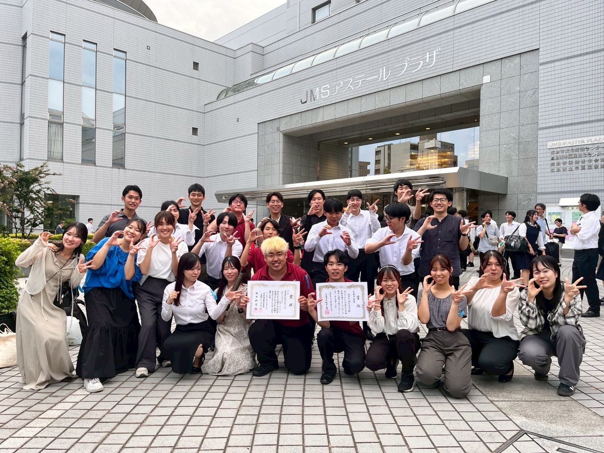

2025-10-20
中国大会金賞＆全国大会出場！
2025年9月20日土曜日に、広島県広島市JMSアステールプラザで行われた第63回中国合唱コンクールに出演しました。大学職場一般部門の大学ユースの部で金賞を受賞し、全国大会への推薦を頂きました。中国支部では、大学ユースの部で3年連続同じ団体が全国大会に出場するのは11年ぶりのことになります。全国大会でもよい成績を残せるよう、練習に励んでいきます。
2025-10-20
2025年9月20日土曜日に、広島県広島市JMSアステールプラザで行われた第63回中国合唱コンクールに出演しました。大学職場一般部門の大学ユースの部で金賞を受賞し、全国大会への推薦を頂きました。中国支部では、大学ユースの部で3年連続同じ団体が全国大会に出場するのは11年ぶりのことになります。全国大会でもよい成績を残せるよう、練習に励んでいきます。
2025-10-20
8月17日に行われた、CancaoNovaさん主催の交流型合同演奏会「CancaoNova Chorus Next 3.5」に出演させていただきました！多くの団体の皆さまと音楽を通じて交流することが出来、合唱の楽しさや魅力を改めて感じる貴重な時間となりました✨13団体の演奏や合同演奏は、後日 CancaoNovaさんのYoutubeに手公開されます。ぜひご覧ください！
2025-10-20
8月10日に第64回全日本合唱コンクール鳥取県大会の大学ユースの部に出場しました。金賞を受賞し、中国大会への推薦を頂きました。中国大会でより良い演奏ができるよう、各支部でより身を引き締めて練習に励みます🔥